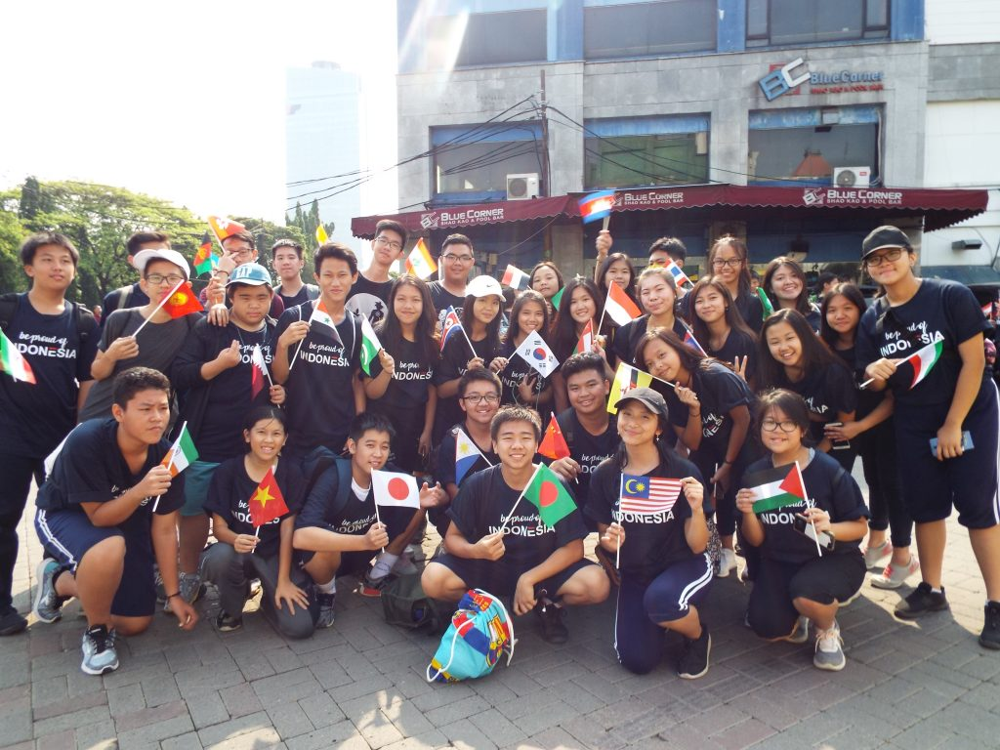

OUR CURRICULUM
 Sekolah Santo Yakobus menggunakan Kurikulum Nasional tahun
2013 (K-13) yang disesuaikan dengan konteks dan kebutuhan sekolah, yakni konteks nilai yang ingin dikembangkan, termasuk keyakinan kami bahwa semua siswa
kami memiliki potensi yang unggul.
Santo Yakobus mengembangkan basis keunggulannya pada Kurikulum pemerintah sebagai pegangan dan diperkaya dengan
nilai spiriutalitas Sekolah Santo Yakobus yaitu religius, humanis, intelektualis, nasionalis dan peduli lingkungan hidup.